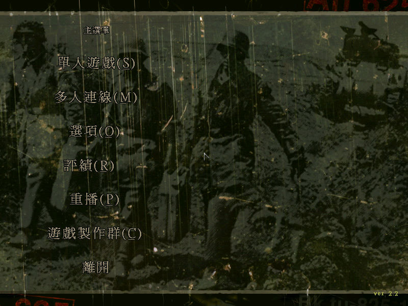
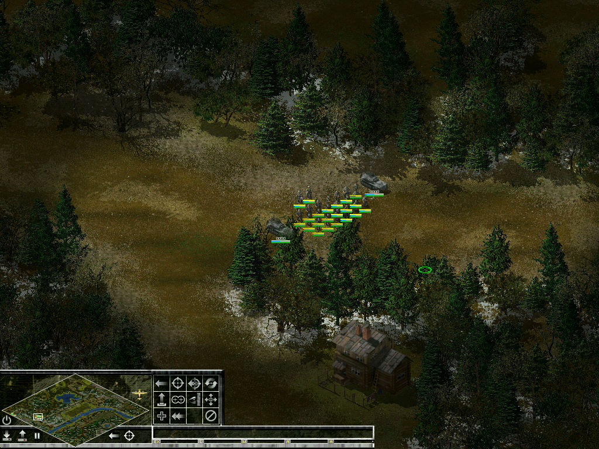
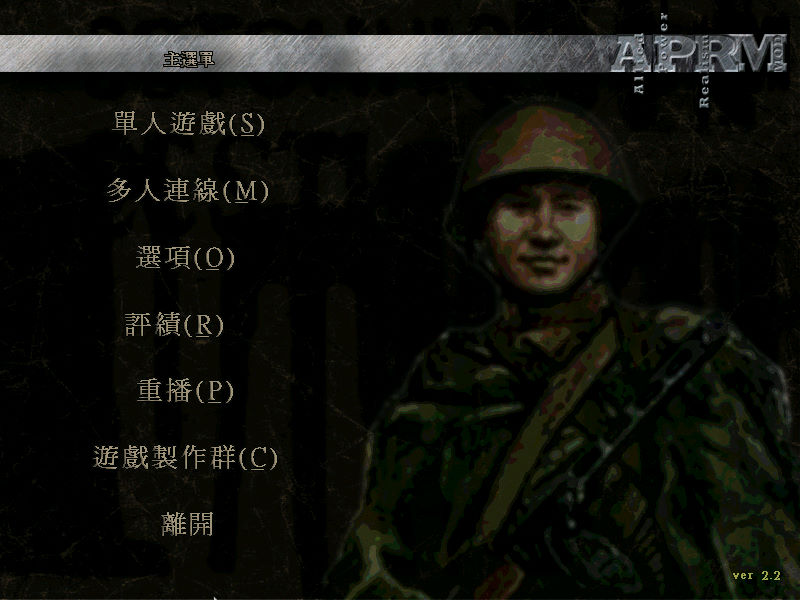
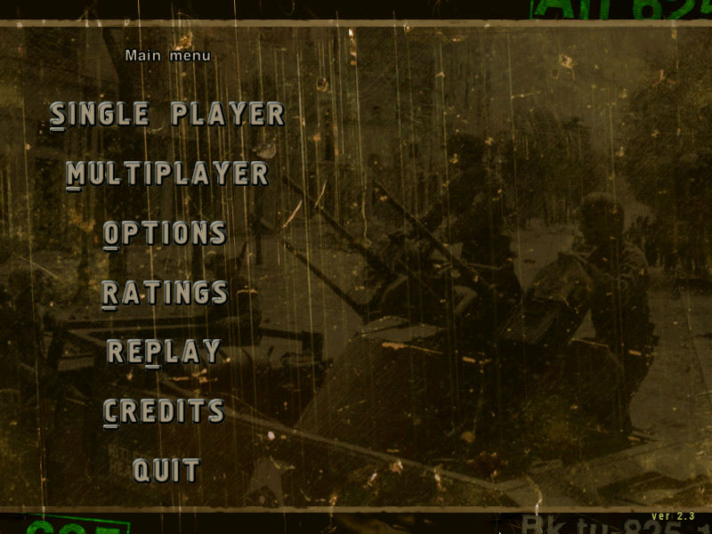

名稱：裝甲騎兵2／突襲2 (Sudden Strike 2，中文／英文版)
簡介：Fireglow 2002年出品的即時戰術遊戲，由CDV代理發行，台灣由光譜中文化並代理發
行。2003年推出「APRM：秘密行動／隱秘行動（Hidden Stroke APRM）」資料片，2004
年再推出加強版「資源戰（Resource War）」 [待補]。




保護：繁中版主程式與資料片為光碟StarForce 3.04，英文資源戰加強版無保護
備註：繁中版主程式與資料片均為2.2版
備註：執行後若出現Can't load profile .\SudTest.ini錯誤，請建立捷徑，並將工作目錄
變更為往上有出現sudtest.ini的目錄（game或APRM）。
檔案：nocd22.rar = 繁中主程式2.2免光碟檔
nocda22.rar = 繁中資料片2.2免光碟檔